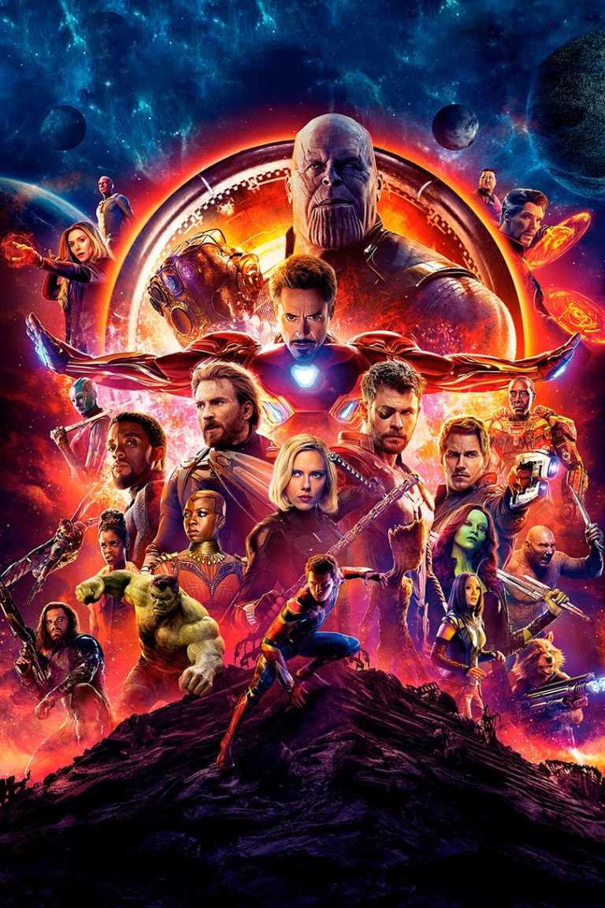
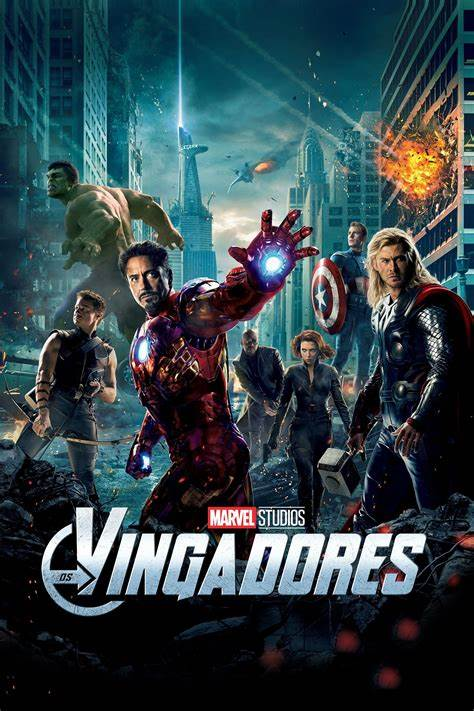
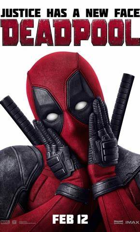

Após Thanos eliminar metade das criaturas vivas, os Vingadores têm de lidar com a perda de amigos e entes queridos. Com Tony Stark vagando perdido no espaço sem água e comida, Steve Rogers e Natasha Romanov lideram a resistência contra o titã louco.
Captain Marvel
Nos anos 1990, Carol Danvers, uma agente da CIA, acaba estabelecendo contato com uma raça alienígena e ganha poderes sobre-humanos. Entre as suas novas habilidades, estão uma força fora do comum e a capacidade de voar. Descoberta por Nick Fury, ela agora precisa encontrar seu lugar num mundo que está se transformando.
Doutor Stranho
Paralelamente, Stephen Strange também tem sua própria jornada em Multiverso da Loucura, onde é confrontado com os atos de suas outras versões pelas dimensões afora. Logo na primeira cena, o Defender Strange morre num confronto contra o demônio que estava tentando roubar os poderes de America Chavez, enviado por Wanda.
Guerra Civil
O enredo gira em torno da discussão a respeito da Lei de Registro de Super-Humanos, imposta pelo governo após um trágico acidente causado por um grupo de heróis, obrigando que todos os heróis uniformizados revelem suas identidades e passem a ser supervisionados pelo Estado.
Thor Ragnarok
Thor está preso do outro lado do universo. Ele precisa correr contra o tempo para voltar a Asgard e parar Ragnarok e a destruição de seu mundo e o fim da civilização asgardiana, que está nas mãos de uma nova ameaça todo-poderosa, a implacável Hela.
X-Man
O Dr. Bolivar Trask acredita que os mutantes são uma ameaça para a humanidade. Ele desenvolve gigantescos robôs chamados Sentinelas, que perseguem impiedosamente os mutantes. Os poucos sobreviventes precisam viver escondidos. Wolverine viaja no tempo para procurar os jovens Xavier e Magneto e impedir que eles sejam caçados e aniquilados no futuro.
Guerra Infinita
Sinopse: “Homem de Ferro, Thor, Hulk e os Vingadores se unem para combater seu inimigo mais poderoso, o maligno Thanos. Em uma missão para coletar todas as seis pedras infinitas, Thanos planeja usá-las para infligir sua vontade maléfica sobre a realidade.”

Vingadores
Loki, o irmão de Thor, ganha acesso ao poder ilimitado do cubo cósmico ao roubá-lo de dentro das instalações da S.H.I.E.L.D. Nick Fury, o diretor desta agência internacional que mantém a paz, logo reúne os únicos super-heróis que serão capazes de defender a Terra de ameaças sem precedentes. Homem de Ferro, Capitão América, Hulk, Thor, Viúva Negra e Gavião Arqueiro formam o time dos sonhos de Fury, mas eles precisam aprender a colocar os egos de lado e agir como um grupo em prol da humanidade.

Capitão America o primeiro vingador
Sinopse. 2ª Guerra Mundial. Steve Rogers (Chris Evans) é um jovem que aceitou ser voluntário em uma série de experiências que visam criar o supersoldado americano. Os militares conseguem transformá-lo em uma arma humana, mas logo percebem que o supersoldado é valioso demais para pôr em risco na luta contra os nazistas.
Guardiões da Galaxia volume 1
Em Guardiões da Galáxia, cinco mercenários em uma galáxia distante são forçados a juntar forças para fugir da prisão, e acabam ficando em meio a um conflito cósmico. A pré-estreia de Guardiões da Galáxia ocorreu em 21 de julho de 2014 no Dolby Theatre, em Hollywood. No Brasil, foi lançado no dia 31 de julho de 2014.
Deadpool
Sinopse. Ex-militar e mercenário, Wade Wilson (Ryan Reynolds) é diagnosticado com câncer em estado terminal, porém encontra uma possibilidade de cura em uma sinistra experiência científica. Recuperado, com poderes e um incomum senso de humor, ele torna-se Deadpool e busca vingança contra o homem que destruiu sua vida.

Hulk
Hulk explora as origens de Bruce Banner, que depois de um acidente de laboratório envolvendo radiação gama se torna capaz de se transformar em um enorme monstro de pele verde sempre que ele fica com raiva, enquanto ele é perseguido pelos militares dos Estados Unidos e entra em um conflito com o seu pai.
Homen aranha de volta ao lar
Peter tenta retomar sua rotina normal, distraído com a ideia de provar que é mais do que apenas o Homem-Aranha, grande amigo da vizinhança. Mas quando o Abutre (MICHAEL KEATON) surge como um novo vilão, tudo que Peter considera mais importante estará em perigo.
.jpg)
.jpg)
.jpg)
.jpg)
.jpg)